References:
- J. O. Ramsay, Spencer Graves and Giles Hooker (2020). fda: Functional Data Analysis. R package version 5.1.4. https://CRAN.R-project.org/package=fda
- Happ-Kurz C (2020). “Object-Oriented Software for Functional Data.” Journal of Statistical Software, 93(5), 1-38. doi: 10.18637/jss.v093.i05 (URL: https://doi.org/10.18637/jss.v093.i05).
Introduction
denoisr is a R package which permits to smooth (remove the noise from) functional data by, first, estimate the Hurst coefficient of the underlying generating process.
Functional data to smooth should be defined on a univariate compact, but can be irregularly sampled. denoisr can also be used only for Hurst parameter estimation.
denoisr have a support for the package funData.
Model
Let \(I\) be a compact interval of \(\mathbb{R}\). We assume \(X^{(1)}, \dots, X^{(N)}\) to be an independent sample of a random process \(X = \left(X_t : t \in I\right)\) with continuous trajectories. For each \(1 \leq n \leq N\), and given a positive integer \(M_n\), let \(T_m^{(n)}, 1 \leq m \leq M_n\) be the random observation times for the curve \(X^{(n)}\). These times are obtained as independent copies of a variable \(T\) taking values in \(I\). The integers \(M_1, \dots, M_N\) represent an independent sample of an integer-valued random variable \(M\) with expectation \(\mu\). We assume that the realizations \(X\), \(M\) and \(T\) are mutually independent. The observations consist of the pairs \(\left(Y_m^{(n)}, T_m^{(n)}\right) \in \mathbb{R} \times I\) where \(Y_m^{(n)}\) is defined as \[Y_m^{(n)} = X^{(n)}(T_m^{(n)}) + \varepsilon_m^{(n)}, \quad 1 \leq n \leq N,~ 1 \leq m \leq M_n,\] and \(\varepsilon_m^{(n)}\) are independent copies of a centered error variable \(\varepsilon\).
Let \(t_0 \in I\) an arbitrarily fixed piont. The aim is to estimate \(X^{(1)}(t_0), \dots, X^{(N)}(t_0)\).
Example on temperature data
The Canadian temperature data correspond to the daily temperature at \(35\) different locations in Canada averaged over 1960 to 1994. This dataset is included in the package fda.
This section performs the smoothing of the Canadian temperature Weather data.
# Load data
data("canadian_temperature_daily")This package manipulates lists to define functional data. So, functions are provided to convert it as functional data object defined in the package funData.
# Convert list to funData object
data_fd <- list2funData(canadian_temperature_daily)So, we can use all the available function for funData object. As an example, we can plot the data with the ggplot2 style.
# Plot of the data
autoplot(data_fd) +
labs(title = 'Daily Temperature Data',
x = 'Normalized Day of Year',
y = 'Temperature in °C') +
theme_minimal()
The smoothing of the curves can be performed using the function smooth_curves. It accepts the parameter t0_list which correspond to the times where we want to estimate the bandwidth and the parameter k0_list which is the considered neighborhood.
# Smooth the data
smooth_data <- smooth_curves(canadian_temperature_daily,
t0_list = 0.5,
k0_list = 5)Then, we can plot the smoothed data.
# Plot of the smoothed data
smooth_data_fd <- list2funData(smooth_data$smooth)
autoplot(smooth_data_fd) +
labs(title = 'Smooth Daily Temperature Data',
x = 'Normalized Day of Year',
y = 'Temperature in °C') +
theme_minimal()Finally, we show on particular curve along its smoothed version to look at the impact of smoothing.
# Plot one realisation of the smoothed data
montreal <- tibble(t = canadian_temperature_daily$Montreal$t,
Data = canadian_temperature_daily$Montreal$x,
Smooth = smooth_data$smooth$Montreal$x) %>%
reshape2::melt(id = 't')
ggplot(montreal, aes(x = t, y = value, color = variable)) +
geom_line() +
labs(title = 'Example of Montreal',
x = 'Normalized Day of Year',
y = 'Temperature in °C',
color = '') +
theme_minimal()
Example on simulated data
We will do the same analysis on some simulated datasets.
On fractional brownian motion
First, we will do the analysis on a dataset of fractional brownian motion. A fractional brownian motion is a continuous-time Gaussian process \(B_H(t)\) on \([0, 1]\), such that:
\(B_H(0) = 0\)
\(\mathbb{E}(B_H(t)) = 0, \quad \forall t \in [0, 1]\)
\(\mathbb{E}(B_H(s)B_H(t)) = \frac{1}{2}\left(\lvert s\rvert^{2H} + \lvert t\rvert^{2H} - \lvert t - s\rvert^{2H}\right)\) where \(H\) is a real number in \((0, 1)\), named Hurst parameter.
# Simulate some data
set.seed(42)
fractional_brownian <- generate_fractional_brownian(N = 100, M = 350,
H = 0.5, sigma = 0.05)
# Smooth the data
smooth_data <- smooth_curves(fractional_brownian,
t0_list = 0.5,
k0_list = 14)
# Estimation of the Hurst coefficient
print(smooth_data$parameter$H0)
#> [1] 0.5035138
# Plot a particular observation
obs <- tibble(t = fractional_brownian[[1]]$t,
Noisy = fractional_brownian[[1]]$x,
Truth = fractional_brownian[[1]]$x_true,
Smooth = smooth_data$smooth[[1]]$x) %>%
reshape2::melt(id = 't')
ggplot(obs, aes(x = t, y = value, color = variable)) +
geom_line() +
labs(title = 'Fractional brownian motion',
x = 'Normalized time',
y = 'Value',
color = '') +
theme_minimal()On piecewise fractional brownian motion
set.seed(42)
piece_frac_brown <- generate_piecewise_fractional_brownian(N = 150, M = 350,
H = c(0.2, 0.5, 0.8),
sigma = 0.05)
# Smooth the data
smooth_data <- smooth_curves(piece_frac_brown,
t0_list = c(0.15, 0.5, 0.85),
k0_list = c(14, 14, 14))
# Estimation of the Hurst coefficient
print(smooth_data$parameter$H0)
#> [1] 0.1634871 0.6689895 0.7037816
# Plot a particular observation
obs <- tibble(t = piece_frac_brown[[1]]$t,
Noisy = piece_frac_brown[[1]]$x,
Truth = piece_frac_brown[[1]]$x_true,
Smooth = smooth_data$smooth[[1]]$x) %>%
reshape2::melt(id = 't')
ggplot(obs, aes(x = t, y = value, color = variable)) +
geom_line() +
labs(title = 'Piecewise fractional brownian motion',
x = 'Normalized time',
y = 'Value',
color = '') +
theme_minimal()On integrated fractional brownian motion
# Simulate some data
set.seed(42)
inte_fractional_brownian <- generate_integrate_fractional_brownian(N = 100, M = 350, H = 0.5, sigma = 0.025)
# Smooth the data
smooth_data <- smooth_curves_regularity(inte_fractional_brownian,
t0 = 0.5, k0 = 14)
# Estimation of the Hurst coefficient
print(smooth_data$parameter$H0)
#> [1] 1.533345
# Plot a particular observation
obs <- tibble(t = inte_fractional_brownian[[1]]$t,
Noisy = inte_fractional_brownian[[1]]$x,
Truth = inte_fractional_brownian[[1]]$x_true,
Smooth = smooth_data$smooth[[1]]$x) %>%
reshape2::melt(id = 't')
ggplot(obs, aes(x = t, y = value, color = variable)) +
geom_line() +
labs(title = 'Integreted Fractional brownian motion',
x = 'Normalized time',
y = 'Value',
color = '') +
theme_minimal()